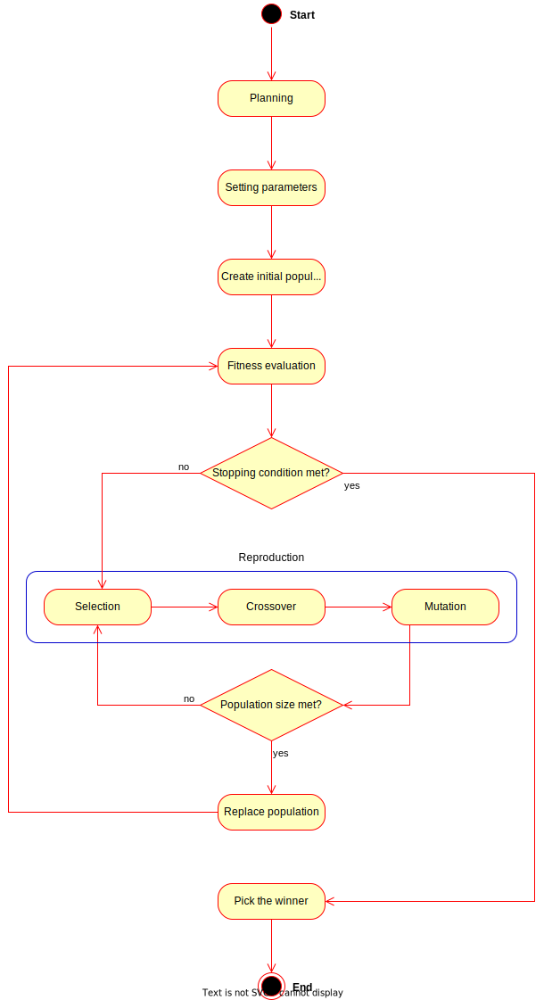
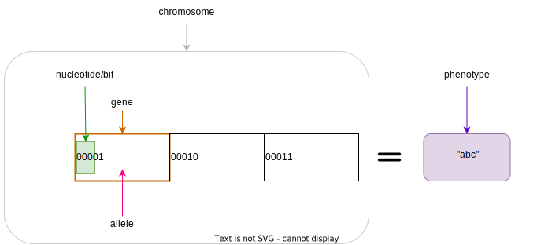
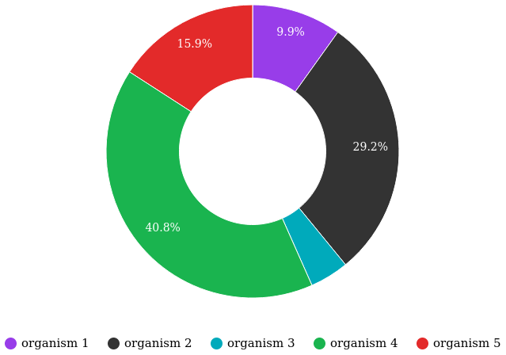
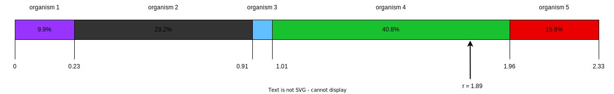
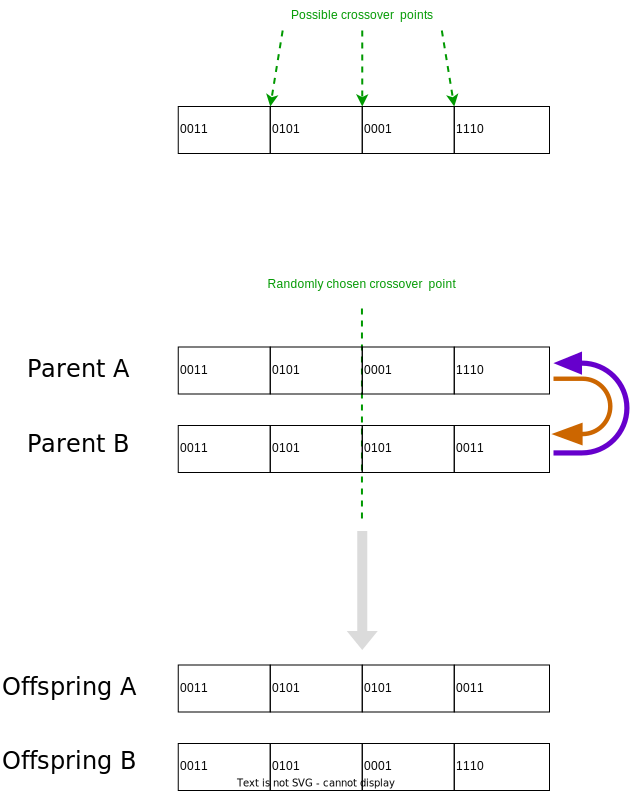
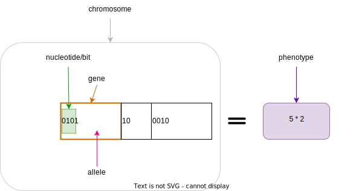

Build Your Own Genetic Algorithm
Jun 5, 2023
I’m extremely grateful to Danny Fekete and his wife, Carolyn Piccinin, for their indispensable help with editing and vetting the bulk of this work for accuracy. And my partner, Leticia Duque, for her patience in reviewing and her valuable insights.
Overview
Years ago, I stumbled upon a tutorial on genetic algorithms that ended up being one of the most interesting coding exercises I’ve ever done. I still think about it often to this day and I want to bring that same joy to others by providing my own explanation of the subject. This tutorial is meant to be approachable by anyone who knows at least one programming language, beginners and experts alike. Doing this exercise is a great a way to practice a new programming language you’re learning, improve with one you’re already familiar with, or rekindle your passion for programming. Even better, it will also give you a deeper understanding of how evolution works in the real world after simulating it in code.
I’m going to start by explaining the general steps of a standard genetic algorithm. Afterwards, and this is the fun part, I’m going to outline a problem to solve so you can start coding right away! Your resulting program only needs to take a single number as input and print a string as output, so it can have a simple command-line user interface or you can make a fancy web UI—it’s up to you how far you want to take it.
Throughout this tutorial, I’ll be using terms from the topics of natural selection and genetics. You do not need to understand the terms in depth in order to follow along. If you want to learn more about how these things work in the real world, check out this article by Danny Fekete.
A Standard Genetic Algorithm
Very broadly, genetic algorithms attempt to mimic principles of natural selection and genetics to find optimal solutions to problems. The overall idea is, given a target problem, we’re going to encode potential solutions to the problem. Thinking of these potential solutions as organisms, we’ll simulate natural selection, allowing them to evolve into better solutions, and then hopefully leaving us with the kind of great solution we were looking for.
The kinds of problems genetic algorithms are well-suited for are problems in which we know what a good solution would look like, but can’t easily come up with one ourselves. Some use-cases are: the travelling salesman problem, employee shift scheduling (e.g., the nurse scheduling problem), and many more.
In this tutorial, I’m going to describe a standard genetic algorithm, which is easy to code and also recommended by experts. The idea is, once you understand how to code this version of a genetic algorithm, when you have a new problem to solve, you can attempt to apply this algorithm as-is or make modifications to the steps as needed.
Start by using an “off the shelf” GA (genetic algorithm). It is pointless developing a complex GA, if your problem can be solved using a simple and standard implementation.
– Sastry, K., Goldberg, D., Kendall, G. (2005). Genetic Algorithms.
Before we dive into details, here’s a high-level overview of the steps of the algorithm:
- Planning: Before writing any code, we need to answer the question: How do we encode a potential solution to the target problem?
- Setting parameters: There are a few key parameters that need to be set, which will heavily influence the performance of the algorithm each time we run it.
- Create initial population: The first population of organisms is created.
- Fitness evaluation: The fitness of each organism in the entire population is evaluated.
- Selection: Two organisms are selected as parents to reproduce.
- Crossover: The parents produce two offspring by potentially undergoing crossover.
- Mutation: Some genes in the offspring might get mutated.
- Replace population: When there’s enough offspring to form a new population, the old population gets replaced.
- Pick the winner: The fittest organism in the remaining population is your solution!

Step 1. Planning
The first step towards building your own genetic algorithm for a target problem is to plan how potential solutions to the problem will be encoded as organisms. More specifically, how to represent genes and chromosomes, and how to evaluate the fitness of an organism.
Breaking it down from the top, each organism will only be made up of a single chromosome, so the two terms are often interchangeable. (This also means an organism’s entire genome and DNA will be encoded in its one-and-only chromosome, which makes things much simpler than with most real organisms.) All of the information for a potential solution must be encoded in this chromosome.
As in nature, a chromosome is made up of genes, which are like numbered containers for information. In this algorithm, and unlike in nature, chromosomes should all be the same length (i.e., they should contain the same number of genes). This is necessary in order for the crossover step to work as it is described in Step 6.
Each gene’s information only has so many possible variations. A particular variant of a gene is called an allele. Breaking down this last piece, an allele is made up of nucleotides (the building blocks of DNA), which are essentially units of information. In our code, each nucleotide will be represented by one bit (0 or 1), since this is the smallest piece of information on a computer.
Genes, each having their own position in a chromosome, can be different sizes. To determine the size of a particular gene, we need to decide on the number of possible alleles needed for the target problem at that gene. For example, if you choose a gene to be 3 bits in size, that gives
(size of bit)(size of gene) = 23 = 8
different possible variants of the gene. (The size of a bit is always 2, since there are only two possible values: 0 or 1.)
Each organism should represent a potential solution to the operating problem. An organism’s representation is called its phenotype. For instance, if the expected solution to an operating problem is an English word, each gene in that organism could be expressed as a letter (e.g., “d”). The combined result of its genes would be its phenotype: a string of letters (e.g., “dwnlode”). In this example, we only need one kind of gene because each part of a chromosome is a letter all the same.1
To allow for 26 (lowercase) letters, we would need genes to be at least 5 bits in length (25 would give us the necessary headroom of 32 possible alleles):
| allele | value |
|---|---|
00001 |
a |
00010 |
b |
00011 |
c |
| … | … |
11010 |
z |
Here’s a breakdown of an example chromosome that could be used for that kind of word-based operating problem:

The first gene in the above chromosome has the allele that represents the value “a”.
Now for fitness. For whatever problem we want our algorithm to solve, we need to know what a good solution looks like because we need some way of knowing which organisms are better than others. The idea here is to come up with a way to evaluate each organism and give it a fitness score (a decimal number). The higher the fitness score, the closer the organism is to an ideal solution. It’s difficult to be more descriptive than this because fitness evaluation varies a lot depending on the problem, so I’ll explain by example.
Let’s say the target problem is to find the best values for a, b, c, and d in the equation a + 2b + 3c + 4d = 30.2 Each organism’s phenotype is its particular values for a, b, c, and d. The fitness evaluation for this problem could be:
1 / (abs((a + 2b + 3c + 4d) - 30) + 1)
Where abs gives the absolute value of a number. This evaluation is designed to give a higher fitness score for better values, with 1 being a perfect score. The range is (0, 1], meaning from 0 (exclusive) to 1 (inclusive).
So, an organism with the values a = 0, b = 0, c = 10, and d = 0 would have a fitness of 1…
1 / (((a + 2b + 3c + 4d) - 30) + 1)
= 1 / (((0 + 2(0) + 3(10) + 4(0)) - 30) + 1)
= 1 / (0 + 1)
= 1
…which is a perfect score! This makes sense, because these values perfectly satisfy the target equation.
a + 2b + 3c + 4d = 30
0 + 2(0) + 3(10) + 4(0) = 30
30 = 30
Step 2. Setting parameters
The algorithm has four major parameters that must be set. These will affect how well the algorithm performs each time it runs on a target problem. Once you’ve finished implementing your algorithm, these are the parameters you’ll want to play with and see how it performs differently.
Population size
This is the number of organisms in the population for each generation. We’ll call this parameter populationSize.
A good starting point is populationSize = 50.
Crossover rate
As pairs of organisms are selected to reproduce for the next generation, they may produce exact copies or be combined (like sexual reproduction in the real world). The crossover rate is the probability that each pair of selected organisms will be crossed over, which will be explained in Step 6. We’ll call this parameter crossoverRate.
A good starting point is crossoverRate = 0.6.
Mutation rate
Every bit of information in every chromosome has a (low) chance to be mutated, which will be explained in Step 7. Mutations can spark new traits that can then be carried to future generations, adding diversity to the population. We’ll call this parameter mutationRate.
A good starting point is mutationRate = 0.05.
Stopping condition
At some point, the algorithm has to stop, otherwise you’ve created an infinite loop! The easiest stopping condition to implement is to set a limit on the number of generations. When the limit is reached, take the organism with the highest fitness from the last generation’s population and you have a solution!
Alternately, you could let the stopping condition be a fitness threshold. When a organism’s fitness meets the threshold, halt and deem it the winner!
Step 3. Create initial population
The first generation of organisms needs to come from somewhere. A good way to make the first population is to randomly generate every bit of information in every organism’s chromosome until the number of organisms is equal to populationSize. That way, all the organisms in the population will have completely random genes.
Step 4. Fitness evaluation
Let the games begin! Evaluate the fitness of every organism in the population and store this information to be used in the next step.3
Step 5. Selection
This step begins the reproduction process (along with the next two steps). The current population needs to be used to form a new population (the next generation). Essentially, we’re going to select pairs of organisms from the current population and have them reproduce to form offspring. Each pair will produce two offspring, and once we have enough offspring (determined by populationSize), they will replace the current population.
Since the goal of the algorithm is to work towards a better solution, this step is where we simulate competition. In nature, not all members will reproduce equally—some will thrive and have lots of offspring while others will be less successful by comparison (due to death, inability to find a mate, etc.). Instead of just selecting organisms at random, the probability that an organism is selected should be proportional to its fitness. After all, this is the purpose of an organism’s fitness! It should be more likely for high-performing organisms to be selected for reproduction than their lower-performing peers. For this, we’re going to use the roulette wheel strategy.
Let’s say we have a population of five organisms:
| Organism | Chromosome | Fitness | Percent of population fitness |
|---|---|---|---|
| ■ 1 | 0011 0110 |
0.23 | 9.9% |
| ■ 2 | 0001 1010 |
0.68 | 29.2% |
| ■ 3 | 1001 1011 |
0.1 | 4.3% |
| ■ 4 | 1010 0111 |
0.95 | 40.8% |
| ■ 5 | 0101 0010 |
0.37 | 15.9% |
(Don’t pay much attention to the chromosome values in this example. I made them up randomly.)
At a casino, every segment of a roulette wheel is equal in size. But our goal is to make a rigged roulette wheel where the segments are proportional to their fitness:

Now, when we spin the wheel to select an organism, it’s obvious there will be a bigger chance to land on organism 4 than any other organism.
If you want more direct instructions on implementing the roulette wheel strategy in code, click/tap below. Or, you can enjoy devising the algorithm on your own!
Show roulette wheel instructions
To implement roulette wheel selection in code, this is what you need to do:
- (Your organisms must be kept in order. The way they’re ordered doesn’t matter, so long as the order doesn’t change.)
- Calculate the total fitness of the population (sum the fitnesses of all organisms).
- Calculate the cumulative fitness of each organism. The cumulative fitness of an organism is its fitness plus the sum of the fitnesses of all the organisms before it.
- Generate a random number,
r, between 0 (exclusive) and the total fitness (inclusive). - Find the first organism whose cumulative fitness is greater than or equal to
r.
For example, if we calculate the cumulative fitnesses of our organisms…
| Organism | Chromosome | Fitness | Cumulative fitness |
|---|---|---|---|
| 1 | 0011 0110 |
0.23 | 0.23 |
| 2 | 0001 1010 |
0.68 | 0.91 |
| 3 | 1001 1011 |
0.1 | 1.01 |
| 4 | 1010 0111 |
0.95 | 1.96 |
| 5 | 0101 0010 |
0.37 | 2.33 |
…and if r turns out to be 1.89, that means we select organism 4.

We have now met the overall goal of this step: to select two organisms while accounting for their fitness, which will be used in the next step to produce a pair of offspring.4
Step 6. Crossover
The purpose of this step is to involve an important aspect of natural selection: heredity. Offspring tend to resemble some combination of their parents (and diminishingly, their more distant ancestors). We’re going to achieve this through reproduction by breeding or cloning. The offspring of the two previously selected organisms will either inherit a combination of their traits (genes from both parents) or be clones of the parents.
To check if a crossover should happen, generate a random number, r, between 0 and 1. If r is less than or equal to crossoverRate, perform a crossover. Otherwise, let the offspring be exact copies of the parents (put simply, the parents become the offspring).
To crossover two organisms, pick a random position between the genes of a chromosome and swap all the alleles to the right in the first chromosome with the corresponding alleles in the second chromosome. (Remember, our chromosomes are supposed to contain the same number of genes, so this makes it easy to line them up and cut them at the same spot.)

Step 7. Mutation
Due to mutation in nature, novel or modified characteristics occasionally show up that do not appear to have belonged to an ancestor, but can still be passed on to offspring like any other trait. Combined with heredity, this suggests that a population has a capacity for change beyond just an endless recombination of preexisting traits. And due to fitness-based selection, occasionally a novel trait will arise that confers a competitive advantage (e.g., the organism that has that new trait is better able to survive and reproduce because of it). These traits will then enter and proliferate across the population through subsequent generations.
To simulate genetic mutation in code, we allow the newly formed offspring the potential to mutate. For each bit in each offspring’s chromosome:
- Generate a random number,
r, between 0 and 1. - If
ris less than or equal tomutationRate, mutate the bit. To mutate, simply flip the bit (0to1, or1to0).
Step 8. Replace population
Steps 5 to 7 (selection, crossover, and mutation) taken as a cycle together form the reproduction process. Each cycle produces two offspring. We need to repeat the cycle until we get enough offspring to form a new population (populationSize), which immediately replaces the old population. The old population won’t be needed anymore (everything dies…). (For practical purposes, this means offspring never reproduce with the previous generation.)
Step 9. Repeat until the stopping condition is met
As the gods of this artificial world of digital organisms, we decide when the simulation ends.
Steps 4 to 8 form the main loop of the algorithm. Each iteration of that loop is one generation. The planned stopping condition marks the end of the loop, which leaves us with the last generation’s population. If the stopping condition is a limit on the number of generations, say 100, then we simply stop after repeating 100 iterations.
Step 10. Pick the winner
In the remaining population, pick the organism with the highest fitness. There’s your solution!
A Target Problem
Just reading about genetic algorithms won’t be enough to grasp this concept; you need to try implementing a genetic algorithm on your own. But first, you need the right kind of problem to solve. Lucky for you, I’ve got that part covered! In this section, I’m going to outline a problem and give you all the necessary details so you can start coding in any programming language you want. In other words, I’m going to cover Step 1 (planning) and you have to do the rest.
The Problem
Given a target number, find a human-readable string of single-digit numbers and basic arithmetic operators that equals that number. For example, if the target number is 10, some solutions would be:
5 + 55 * 25 + 5 + 1 - 1 - 5 - 5 + 1 + 9 * 1 / 1
Note: Because the solutions should take the form of math strings, you should decide how those strings get evaluated. For example, they could be evaluated left-to-right or use the standard order of operations (multiplication > division > addition > subtraction). So, 2 + 2 * 3 = 8 or 2 + 2 * 3 = 12. Feel free to choose whichever evaluation method is easier for you to implement.
Implementing Step 1. Planning
Since all of the example solutions (above) equal 10 exactly, in a genetic algorithm they would all be ideal matches with perfect fitness. Of course, there are many possible solutions to reach any target number and our genetic algorithm may not discover any of them in the limited time it has to run. So, the true goal of our genetic algorithm is to give us the best candidate after a certain number of generations. After all, genetic algorithms aren’t guaranteed to give perfect solutions every time.
In this problem, a potential solution is to be a string of single-digit numbers and arithmetic operators, so that is exactly what an organism’s chromosome should represent. The genes, being pieces of a chromosome, should therefore each express a single-digit number or an arithmetic operator. More specifically, we want strings that alternate between numbers and operators (number operator number operator …). So, let’s have two kinds of genes: a number gene and an operator gene.
To determine gene size, we need to know how many possible alleles are necessary. For number genes, the required values are single-digit numbers: 0, 1, 2, 3, 4, 5, 6, 7, 8, and 9. That’s ten possible alleles in total, so we need a minimum of four bits per gene (giving us 24 = 16 different possible alleles). We’ll have a few alleles left over, but we can consider them junk if they turn up in the resulting chromosome. So, our alleles for number genes are:
| allele | value |
|---|---|
0000 |
0 |
0001 |
1 |
0010 |
2 |
0011 |
3 |
0100 |
4 |
0101 |
5 |
0110 |
6 |
0111 |
7 |
1000 |
8 |
1001 |
9 |
1010 |
(junk) |
1011 |
(junk) |
1100 |
(junk) |
1101 |
(junk) |
1110 |
(junk) |
1111 |
(junk) |
For operator genes, we need to represent four basic math operators: +, -, *, and /. Conveniently, we can use two bits for exactly four different possible values:
| allele | value |
|---|---|
00 |
+ |
01 |
- |
10 |
* |
11 |
/ |
As an example, we could have the following organism’s chromosome and its phenotype:

When evaluating a math string (an organism’s phenotype), we’ll have to clean up any junk it may have. Let’s say, for any junk in the string, ignore the junk gene and its immediately preceeding gene (which should be an operator).
Here’s an example with clean-up:
[0101 10 0010 00 1010 01 0001 00 1000 11 1111 00 0010]
= 5 * 2 + (junk) - 1 + 8 / (junk) + 2
= 5 * 2 - 1 + 8 + 2
= 19
Now we need to decide how the fitness of an organism should be evaluated. Recall that we need an evaluation function which produces a higher number for organisms that are closer to the ideal solution. Ideally, we should fit the fitness number into the range (0, 1], since this makes the roulette wheel selection easier. Try to come up with this function yourself, or click/tap to see my suggestion below (there’s more than one right answer!).
Show fitness function
fitness(phenotype) = 1 / abs((target - phenotype) + 1)
Where phenotype is the evaluated expression of a given organism, target is the target number, and abs gives the absolute value of a number.
Watch out! It is very possible for division by 0 to be part of a phenotype. I’ll leave it up to you to decide how to handle it, but do expect it to happen and think about your options.
Build it!
That’s it! Now you’re on your own to code this algorithm by implementing Steps 2 through 10. In the end, you should have a program which, given a target number, produces a math expression for that number. Remember, if you’re not getting good results, try tweaking the parameters.
Food for Thought
Why a chance of crossover?
Why is it important to have a chance of crossover not happening? Suppose we have two organisms, Alice and Bob, selected to be parents. Alice’s fitness is 99% and Bob’s is 80%. If Alice and Bob are to produce offspring who inherit from both of them, the offspring are almost guaranteed to have a lower fitness than Alice’s 99%. A preferable outcome would be for Alice’s offspring to exclusively contain her genes—without any crossover with Bob—resulting in a clone. (That final percentage point of fitness might be then achieved with a lucky mutation.)
Can organisms breed with themselves?
Did you notice, in the reproduction process, it’s possible for an organism to be paired with itself? The exact same organism can be selected twice in a row! Then, in the crossover step, whether a crossover happens or not, we’ll get two identical offspring. So really, one organism can be taken from the current population to produce two of itself for the next population. What are the possible implications of this when the algorithm runs?
What does cloning represent?
When a crossover doesn’t occur, the offspring are clones of the parents. What does it mean to produce clones? Are we simulating an organism that reproduces both sexually and asexually? Or are we representing organisms that simply carry on living into the next generation?
What are the traits?
In the real world, organisms can be described as having many traits. In the target problem described above, what are the traits of an organism? Do each of our organisms only have a single trait: its evaluated number? Or can we think of each expressed allele as a trait?
When does crossover help?
In the target problem described above, does crossing over two high-fitness organisms have a good chance of producing high-fitness offspring? Swapping genes seems likely to drastically, and almost randomly, change a organism’s phenotype. It seems more like mutating a chunk of a chromosome than inheriting traits.
What are other ways of representing organisms in the target problem?
The plan I laid out for the target problem is only one of many options. What are some other ways you could define genes and chromosomes to build math strings? Do we need more than one kind of gene?
Footnotes
For a problem that requires solutions with more structure, we could choose chromosomes’ genes to be different lengths. For example, chromosomes could be three genes in length, where the first gene holds 2 bits, the second gene holds 5 bits, and the third gene holds 4 bits. However many different kinds of genes we want to have, each one must have its own set of possible alleles.↩︎
Example borrowed from: Hermawanto, D. (2013). Genetic algorithm for solving simple mathematical equality problem. arXiv preprint arXiv:1308.4675.↩︎
This is arguably an implementation detail pertaining to optimization via caching, but I see it as having conceptual importance. The fitness of an organism never changes because its genetics don’t change and the operating problem doesn’t change. This is different from how we might talk about people’s physical fitness, where you can become more fit by working out. Since we’re simulating natural selection and treating environmental factors as being constant, fitness is tied to the genetics of an organism, which are fixed. The only changes to genetics happen between generations (i.e., during reproduction). So, with fitness being an unchanging value of an organism, it should be evaluated exactly once per organism.↩︎
Note that this allows for the same organism to be selected more than once. That’s okay! Organisms with higher fitness being allowed to reproduce multiple times is part of natural selection. Less fit individuals may not be selected to breed at all, allowing their less-desirable traits to simply die out.↩︎